甲府市
まるでフィンランドの暮らし
空き家リノベーション住宅 | 4LDK平屋
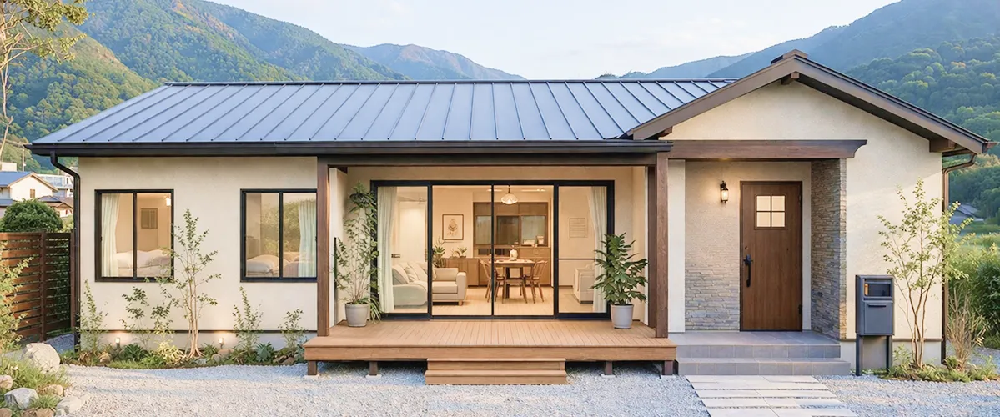
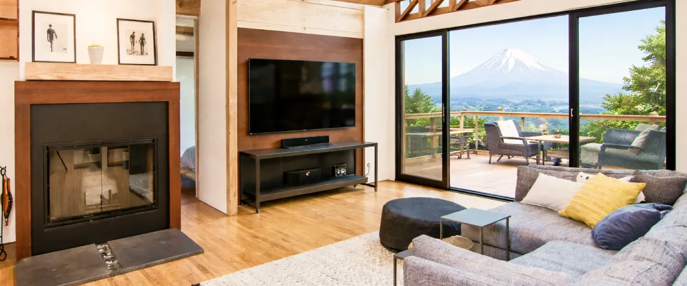

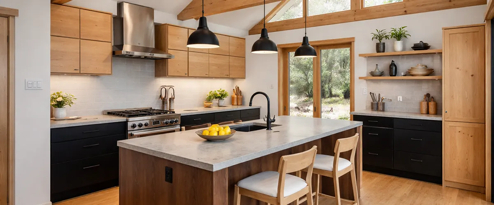
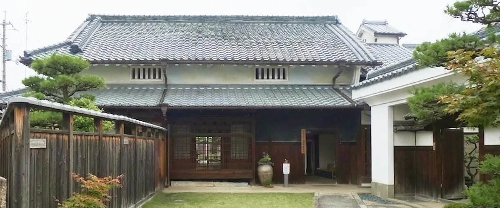
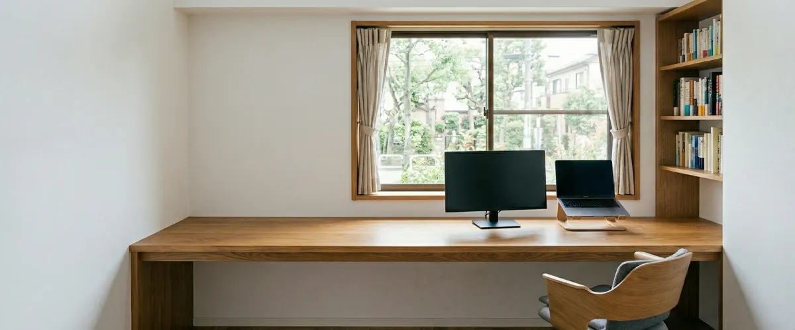
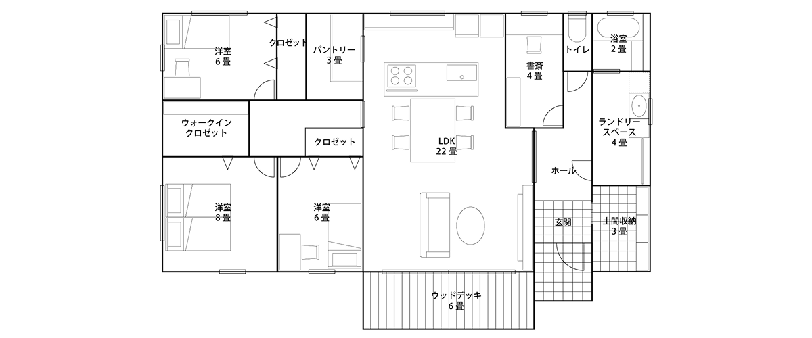
Archive no.001
ご家族構成|4人家族（ご夫婦,6歳,4歳）
敷地面積|310.3㎡
間取り|4LDK
築年数|52年
ご予算|25,000,000円
プラン|STANDERD
「毎日、時間に追われて子供の顔をゆっくり見る余裕もない……」そんな都会での暮らしに区切りをつけ、山梨への移住を決意された30代後半のご夫妻。私たちがご提案したのは、山梨の風景に溶け込むような、ゆとりある広さの平屋リノベーション。都会の新築では到底手の届かないような広い敷地と、ご要望であるフィンランド風の住宅を、山梨の空き家をベースにすることで圧倒的な空間の余白を生み出しました。
リビングの扉を開ければ、そこには遮るもののない山梨の空と、季節ごとに色を変える木々。庭で遊ぶ子供たちを見守りながら、ゆったりとお茶を愉しむ休日。そんな”ちょうどいい”時間が、ここには流れています。
広々としたリビングスペース。大きな窓から暖かな光が入り込み、家族の時間を包み込みます。リビング奥のキッチンからは、作業をしながらリビングの子供の様子も見えます。家族の顔がいつも見える、”ちょうどいい”空間になりました。
山梨の空き家をリノベーションするからこそ叶えられる敷地の広さを活かし、夢だったというウッドデッキを実現。ウッドデッキに面して大きな窓を取り付けることで、フィンランド風の優しい自然の光が入り込む家を実現しています。
木のぬくもりを感じるキッチンスペース。憧れのフィンランド住宅の洗練された印象を出しつつ、生活感が出ても余白を感じられる広さがあります。空き家リノベーションの際に懸念点であったという水回り。リノベーション住宅という選択で浮いた予算を、最新の設備に回すことで実現しています。
もともとは築52年の空き家。今回、スーパーマーケットや学校が車で10分圏内という立地の良さ、基敷地面積が350㎡という広さからこちらの物件を選んだそう。その中古物件の面影を残しつつも、理想の住まいへ。四季の移ろいを感じながら心地よく過ごせる住まいへと生まれ変わりました。
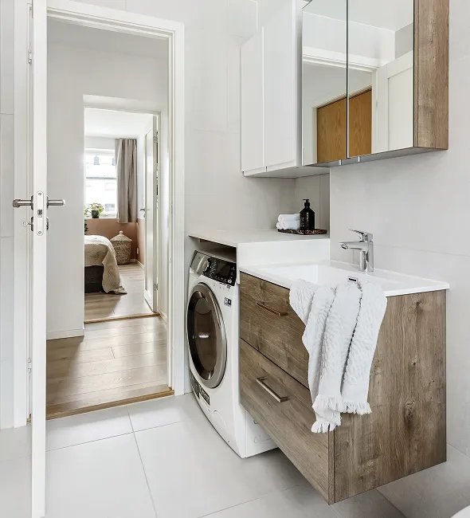
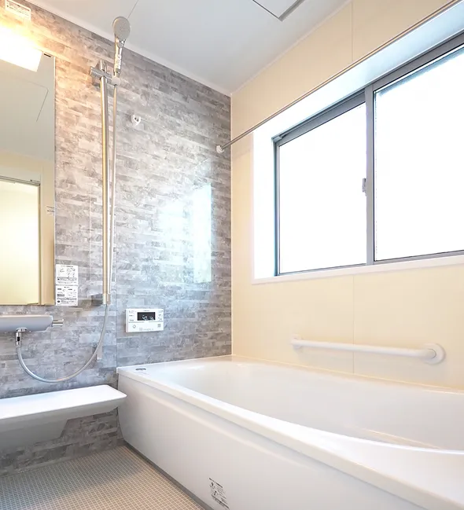
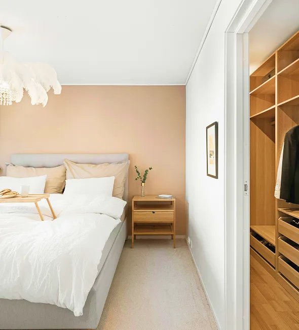
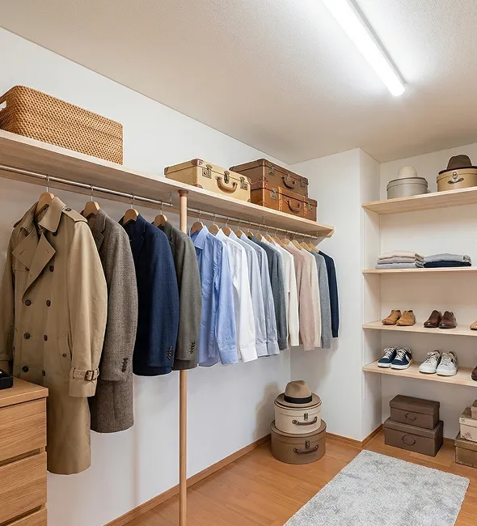
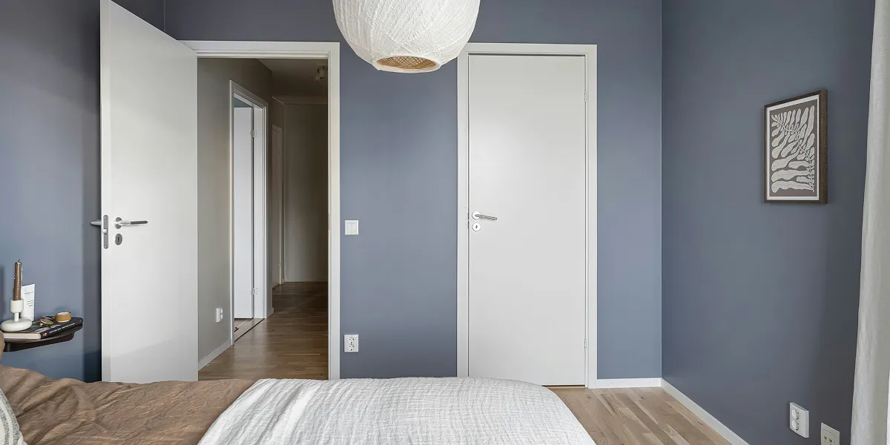
オーナー様の声
「一番の安心感は、物件探しとリノベーションの設計を一貫してお願いできるワンストップサービスがあったことです。移住となると、地域の特性も分からないし、古い物件を買って本当に自分たちが望む断熱性能やデザインが実現できるのか、不安でいっぱいでした。普通なら不動産屋さんと設計事務所を別々に探さなきゃいけませんが、ここでは「この景色が気に入ったけど、断熱はどう補強できる？」という相談がその場で完結しました。担当者の方が、私たちのぼんやりとした「北欧風で暖かい暮らし」という理想を、フィンランドの住宅技術という具体的なカタチに落とし込んでくれた。窓の配置ひとつにしても、山梨の光の入り方を計算して提案してくれたので、素人の私たちには思いつかないような”ちょうどいい”暮らしの土台を作ってもらえたと感じています。」
「正直なところ、移住前は山梨は田舎だし、生活が不便になって子供も退屈するんじゃないかという不安がありました。でも、実際に住んでみるとその認識は180度変わりました。都心では休日にどこへ行くにも行列で、移動だけでクタクタになっていましたが、今は玄関を開ければそこが最高の公園です。子供たちは毎日、土や虫、木々の変化に触れながら、驚くほど健やかに成長しています。一番のギャップは、便利さの基準が変わったことですね。24時間営業のコンビニが近くになくても、家の断熱がしっかりしていて、薪ストーブや床暖房で家族がリビングに自然と集まる。そんな温かい空間があることの方が、私たちにとっては遥かに便利で豊かなことだったんです。都会のマンションでは感じていた隣人への気兼ねや、狭い間取りのストレスから解放され、心にポッカリと余白ができました。この家に来てから、家族で笑っている時間が圧倒的に増えました。」
子どもそれぞれの部屋を確保しつつ、家族が自然と集まるリビングを中心にした間取りにこだわりました。また、外とのつながりを感じられるように大きな窓やウッドデッキを取り入れ、家の中でも開放感を感じられるようにしています。周囲の自然を活かした落ち着いた住環境も気に入っていて、家にいながら季節の変化を感じられるのが魅力です。